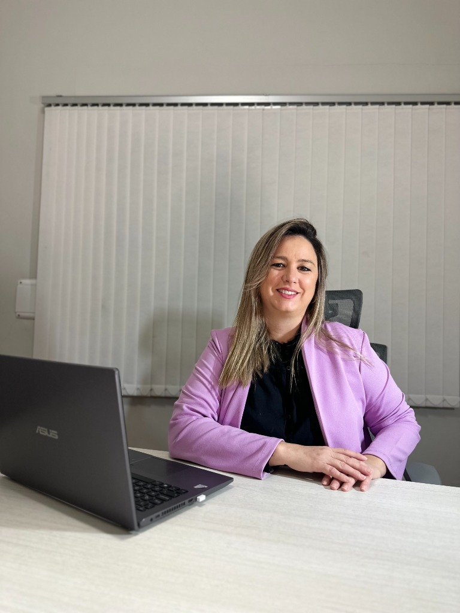

Degrees
- Technical Degree in Translation
- English Language Teaching Degree
- Cambridge CPE C2 (Grade B)
 MARIANA HERRERA
MARIANA HERRERA
Empowering global communication as a professional Spanish translator with high-volume capacity, technical precision, and 10+ years of certified expertise.

As an English–Spanish translator, I specialize in high-stakes documentation where accuracy is essential. With over 3 million words translated and experience working with more than 10 global agencies, I provide certified translations for USCIS that meet the highest professional standards.
I combine linguistic expertise with in-depth knowledge of educational, legal and healthcare terminology to deliver translations you can rely on. Whether you're submitting documents to U.S. institutions or international healthcare providers, every translation is prepared with accuracy, consistency, and attention to detail.
Long-term collaboration with major LSPs and direct clients worldwide.
Extensive experience in high-volume legal and healthcare projects.
"Mariana consistently delivered accurate, well-structured, and high-quality work, even under tight deadlines. She was reliable, responsive, and detail-oriented, with excellent communication throughout each project."
"Mariana is one of the most professional, dedicated, and committed linguists I have ever had the pleasure of working with. My clients have always shared excellent feedback about her work, professionalism, and reliability."
"Mariana consistently delivers accurate, high-quality work, even under tight deadlines. She is organized, dependable, and always goes the extra mile to ensure projects are completed on time without compromising quality."
"Her work stands out for its terminological precision — critical in a highly specialized medical field — and her communication throughout the process is clear and reliable. I recommend her without hesitation."
"She consistently delivered accurate translations and well-formatted files, met deadlines, and communicated clearly throughout our projects. She is reliable, detail-oriented, and contributed to the smooth delivery of the project."
"Mariana is easy to work with. I appreciate her level of professionalism and communication. She is prompt, always willing to help, and the quality of her work is exceptional."
"Mariana is great to work with: precise, on time and responsive. The quality of her work is excellent, and I can always see her great attention to details and handing over a finished product that I know will require no back and forth."
"You are truly a legend, consistently delivering your work within the provided timeframes and always going above and beyond to handle every job professionally. You are a true asset to me and my organization."
"Great translator - precise and always delivers on time. I appreciate Mariana's availability and attention to details."
"Mariana is superb and highly recommended. I had a chance to work with her one time and she delivered very well all of the requirements. Her English is beautiful, plus her energy and attitudes are always maintained."
"Mariana is a professional translator, fast and responsive, translations always delivered on time. We received very good feedback regarding her translation. I recommend using her translation services."
"Excellent quality, on time delivery, always available with utmost support..!! Keen to work with her again and again..!!"
Birth & Marriage Certificates
24 HoursContracts & Power of Attorney
48 HoursFull Dossiers & Medical Records
FlexibleChoosing the right English Spanish translator is the first step toward success. I am ready to provide the certified translation services for USCIS and digitally signed certificates you need to move forward with confidence.